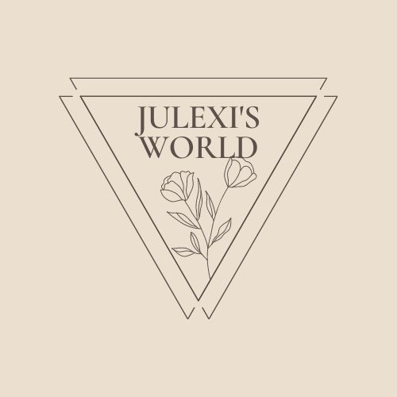

Welcome! I see that you have found my page. My name is Juliana but everyone calls me Julie. I'm a 21 year old Latina born and raised in Worcester, Massachusetts. During my freetime I like to read books, dance, and practice my guitar. In today's blog I will be discussing a side hustle that I still love doing today. During my high school years I discovered that plastic, glass and can bottles can be recycled and in return, receive a little extra pocket money. I know a lot of people might believe that it's gross to go around touching dirty bottles but I don't mind getting my hands dirty. If you're like me then keep on reading!
Think of recycling this way. You are doing your community a favor for maintaining your own community clean, you're also recycling which can be processed in a way that can bring new products in the market place and on top of that...YOU'RE GETTING MONEY! I know 5 cents don't seem a lot per bottle, but when you know the value of money, you'll love to do it either way. So it's a WIN-WIN-WIN situation.
I know you may ask as to how you can access those many bottles. Here is my answer. People often go to the store to buy beverages such as a 12-Pack of CocaCola sodas. These cans can be redeemed/recycled. Another way is if you're family likes to throw parties, then those empty Corona glass bottles can also make you money. Last but not least, just go through your neighbors trash can or ask if they can save you their empty bottles and cans aside. Unfortunately my time is up at the moment. Stay tuned for the continued version of this blog as I will be discussing "How to verify you're bottles can redeemed and if it works for your city."
If you have any questions that you would like for me to answer in the next blog, please feel free to contact me here or click on the contact button at the top left! Thank you for coming!